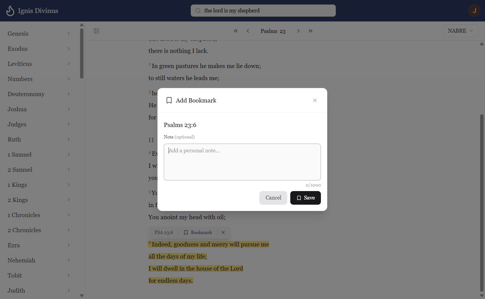
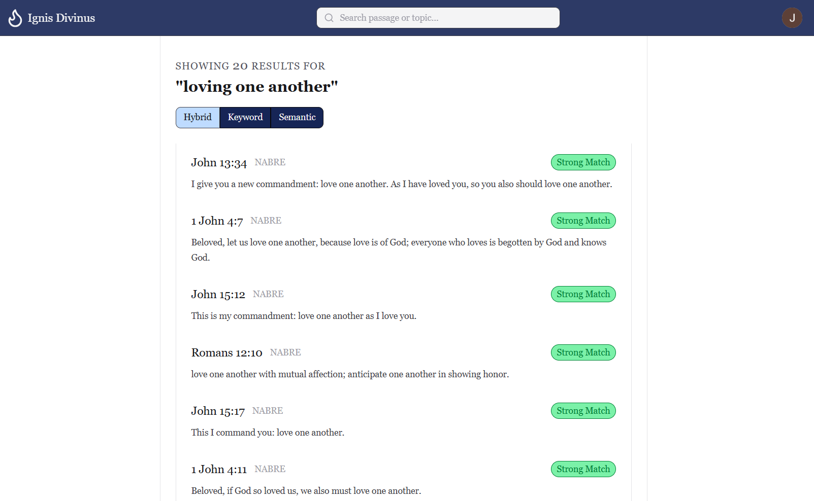
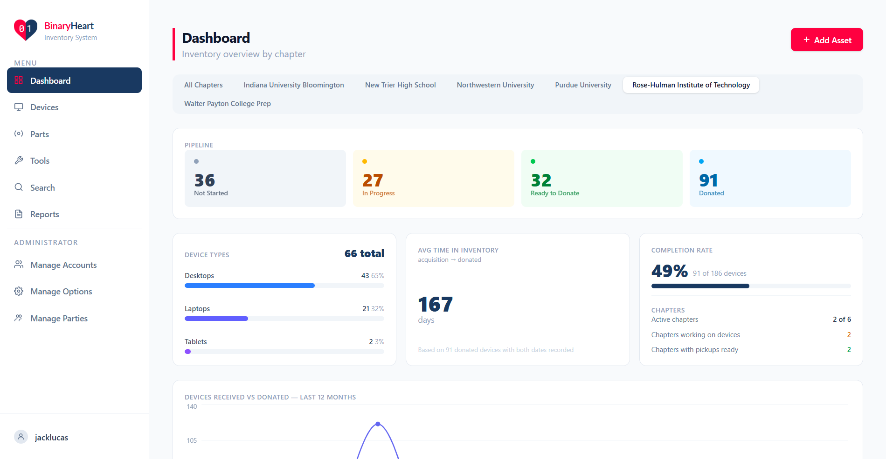
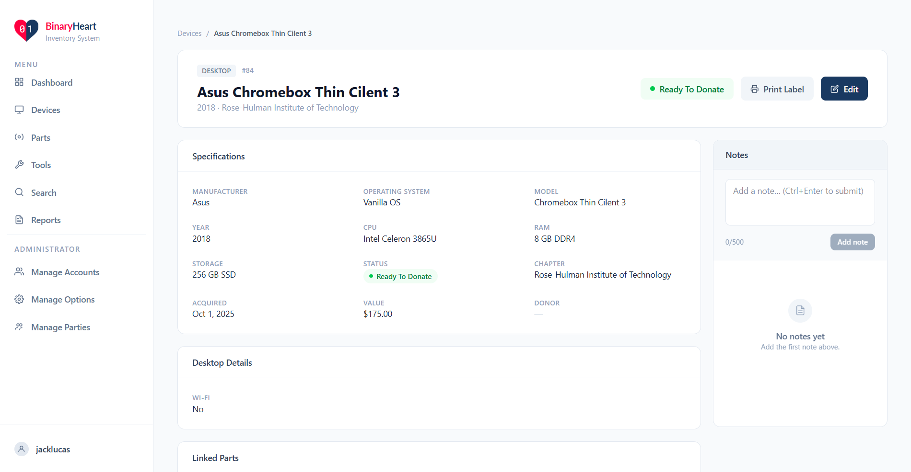
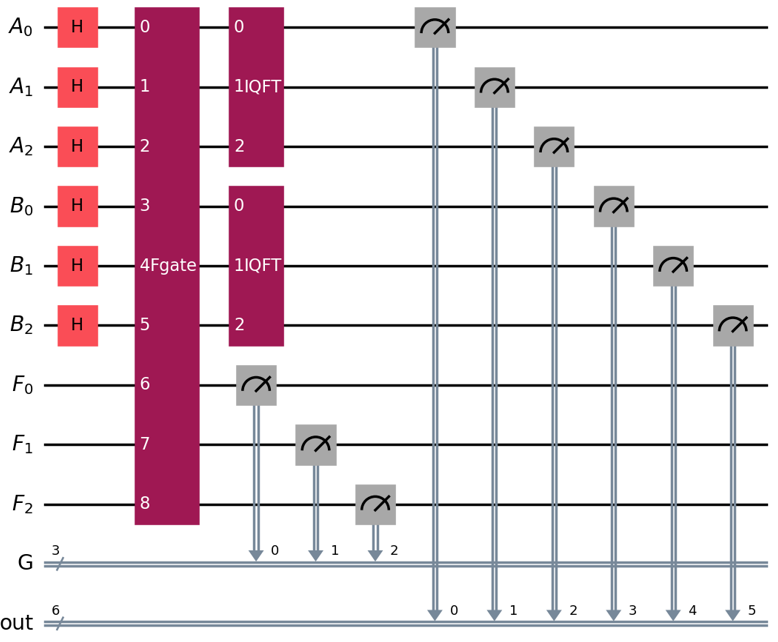
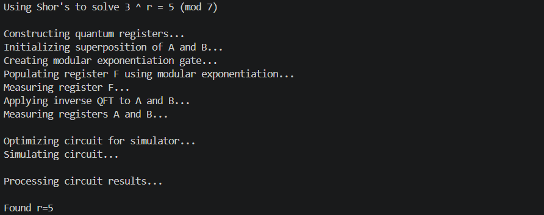

My Portfolio
Ignis Divinus Scripture Reader (2026)
-
Project Overview

- Provides accessible, pocket-sized Scripture to the modern traveler
- Offers multiple Bible translations through an intuitive reader
- Enhances Bible study via an AI-powered semantic search engine
-
Tech Stack
- Next.js
- TypeScript
- PostgreSQL + pgvector
- Auth.js
- tRPC
- Ollama
- Nomic AI
- Prisma
- Docker
- GitHub Actions
-
Links
-
Photos


BinaryHeart Inventory System (2026)
-
Project Overview
- Standardizes device and asset inventory for a national 501(c)(3) nonprofit organization dedicated to bridging the digital divide through technology recycling and refurbishment
- Generates a unique ID and barcode upon each asset's entry for quick retrieval and accurate records
-
Tech Stack
- React
- TypeScript
- Java
- Javalin
- PostgreSQL
- Docker
- Swagger
- OpenAPI
-
Links
-
Photos


Shor's DLP Quantum Simulation (2026)
-
Project Overview
- Implements Shor's Algorithm to solve the Discrete Log Problem via Qiskit, IBM's Python library for quantum circuit development
- Simulates a quantum circuit to indicate correctness and quantum advantage of Shor's Algorithm
-
Tech Stack
-
Links
-
Photos

